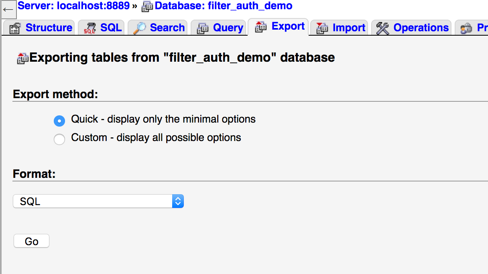
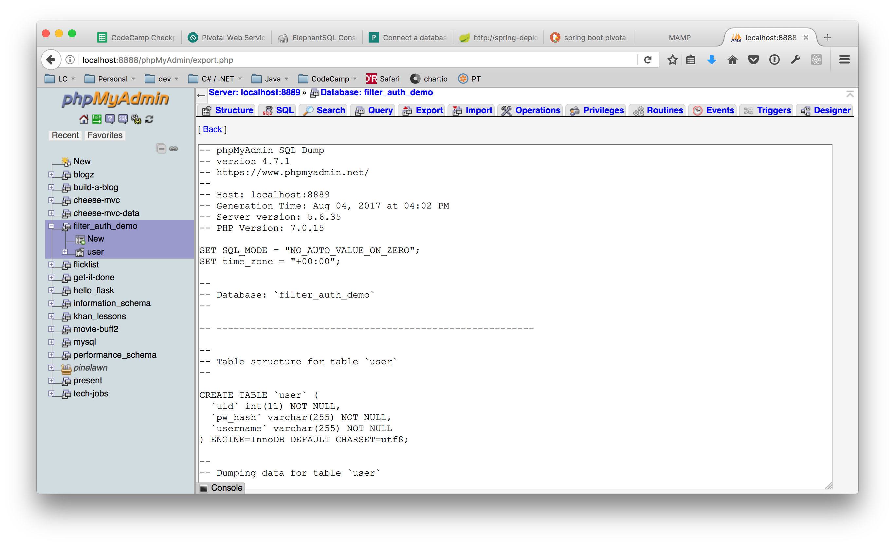
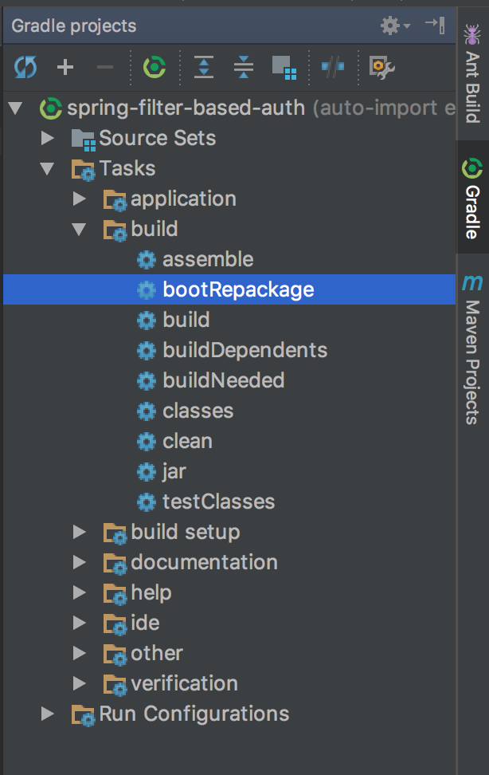
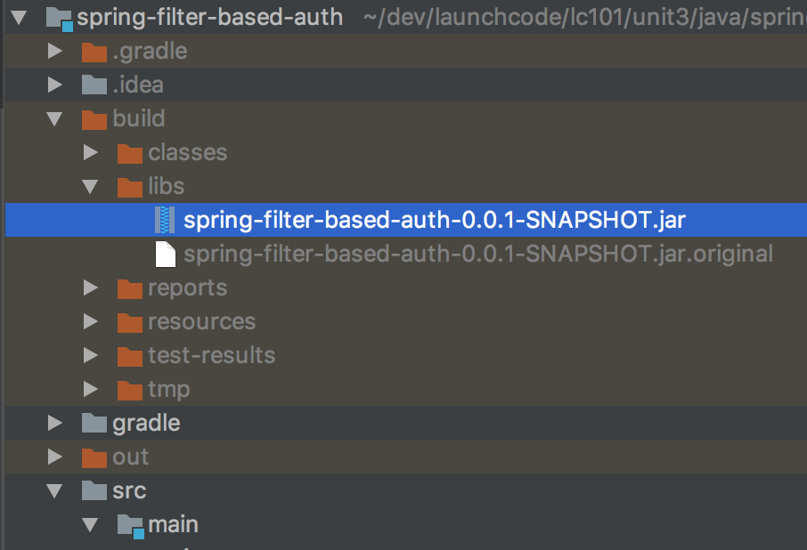

background-image: url(../images/codecamp.png) background-color: #cacaca --- class: center, middle # Deploying Your Java App --- ### Getting Ready: Deployment Branch Create a new branch for deployment. This will allow us to separate configuration between development and production environments, and keep "safe" code separate from development code. ``` $ git checkout -b deploy ``` --- ### Getting Ready: Cloud Account We'll use [Pivotal Cloud Foundry](https://pivotal.io/platform) for hosting. Create an account there (their most basic services are free). Then install the [Cloud Foundry Command-line Interface (CF CLI)](https://pivotal.io/platform/pcf-tutorials/getting-started-with-pivotal-cloud-foundry/install-the-cf-cli) --- ### Getting Ready: CLI Setup Check that the CLI tool installed correctly by running this in a new terminal: ``` $ cf help ``` Then, in your project directory, link to your cloud account: ``` $ cf login ``` Follow the prompts to enter the credentials associated with your account. --- ### Getting Ready: App Configuration At the top level of your project, add a new file named `manifest.yml` -- Add the following contents: ``` applications: - name: APP_NAME buildpack: java_buildpack path: build/libs/ARTIFACT_NAME-0.0.1-SNAPSHOT.jar ``` You can customize APP_NAME to whatever you like. The ARTIFACT_NAME will come from your `build.gradle` file (make sure that versions in the `.jar` filname match what's in your `build.gradle` file as well) Register your app with Cloud Foundry by running `$ cf push`. This command may fail (we still need to set up our database), but it will register the app so that we can connect services to it. --- ### Getting Ready: Customizing applicaiton.properties Reduce your `application.properties` file to the following, removing all other settings: ``` spring.jpa.hibernate.ddl-auto = none ``` We're able to remove the database settings because those will be handled by a CloudFoundry service **Note:** This is a different value for the `spring.jpa.hibernate.ddl-auto` setting that we've been using during development --- ### Set Up the Database Service From your project directory, set up a MySQL service: ``` $ cf create-service cleardb spark DB_SERVICE_NAME ``` You need to provide DB_SERVICE_NAME. We recommend adding `-db` to your APP_NAME from the `manifest.yml` file --- ### About cleardb cleardb is a cloud MySQL service that integrates with Pivotal CloudFoundry. It's spark level service provides: -- - Basic MySQL hosting -- - Storage sufficient for most small applications (up to 5MB storage, up to 4 concurrent connections) -- - Ability to set up credentials for your application to connect, without any need for additional configuration. The service will created a db and user for your app, and use environment variables on the server to allow your app to connect --- ### Bind cleardb to your app You can see your service instances by running: ``` $ cf services ``` -- To bind the database service to your app, run: ``` $ cf bind-service APP_NAME DB_SERVICE_NAME ``` Be sure to use the correct app and service names. When running `cf services` again, you should see the service bound to your app --- ### Setting Up Database Migrations When developing locally, we used the following setting in `application.properties` to have Spring Boot automatically update our database schema when the model changed: ``` spring.jpa.hibernate.ddl-auto = update ``` -- Using schema auto-update in a production setting is generally not a good idea, since data loss can occur if columns or tables are dropped. --- ### Setting Up Database Migrations We'll use Flyway to manage database migrations. -- Install Flyway in your app by adding a dependency to `build.gradle`: ``` compile('org.flywaydb:flyway-core') ``` Place this alongside your other dependencies at the bottom of the file --- ### Creating a Migration Create a new folder: `src/main/resources/db/migrations` Be sure to name this _exactly_ as above, or Flyway will not be able to find your migrations. -- Then, add a new file for your initial migration status. Name it `V1__initialize.sql` Note that this file name: - Starts with a capital `V` followed by the migration #. Your second migration would start with `V2` - Has _two_ underscores between the version and the rest of the file name - Has a descriptive "tail" that makes it easy to tell what this migration includes. For example, you might name your second migration something like `V2__add_user_profile.sql` --- ### Creating a Migration Your migration file should contain any SQL that should be run to update the database and table structure to fit your model. An easy way to obtain your initial migration SQL is to open up phpMyAdmin, select your database, and then Export:  You'll likey want to remote any `INSERT` statements, which would insert your testing data into your production app. --- ### Creating a Migration You can then copy/paste the SQL code provided into your migration file.  --- ### Creating a Migration For subsequent migrations, you'll need to be conscious of the exact changes, and use [`CREATE`](https://dev.mysql.com/doc/refman/5.7/en/create-table.html) and [`UPDATE`](https://dev.mysql.com/doc/refman/5.7/en/update.html) commands. -- If you want to cleanly build your tables from scratch, you can use the method above to get SQL to create all tables, and add `DROP` statments before each `CREATE`: ```sql DROP TABLE IF EXISTS `user`; ``` --- ## Amost Ready! We're done making changes to files within your app, so commit: ``` $ git add . $ git commit -m "Add config for deployment" ``` --- ## Build We need to package up our application before deploying. To do this, open the Gradle panel in IntelliJ and run the `bootRepackage` task to build a "fat JAR"  --- ## Build In the project pane, you'll see your `.jar` file. This is a good time to check that the file name matches that in your `manifest.yml`  --- ## Deploy! From the command line, run: ``` $ cf push ``` This will deploy your app. You will see a status message printed when it's done. If any issues arise, view the logs to see any error output: ``` $ cf logs APP_NAME --recent ``` --- ## Resources [Pivotal Cloud Foundry](https://pivotal.io/platform) [Pivotal Web Services (PWS) Docs](http://docs.run.pivotal.io/) [Getting Started with PWS](http://docs.run.pivotal.io/starting/index.html) [Introducing the Cloud Foundry Java Buildpack](https://content.pivotal.io/blog/introducing-the-cloud-foundry-java-buildpack)